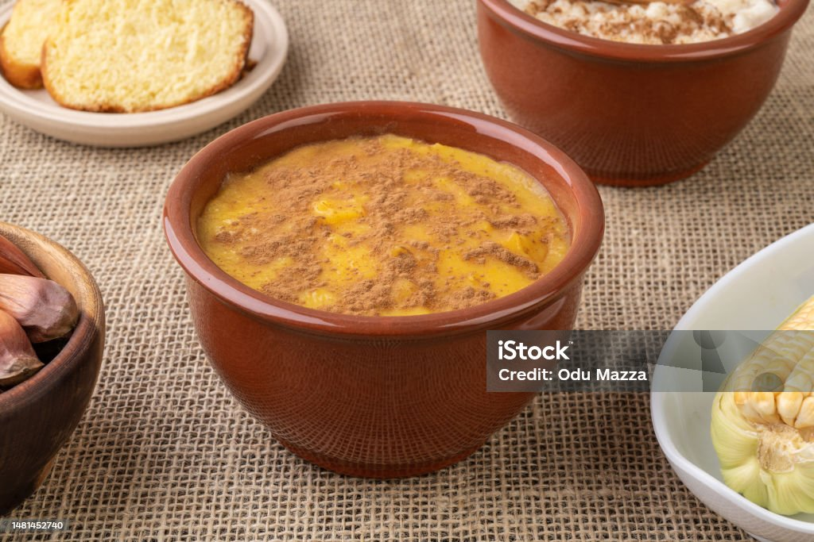

Canjicas

Canjica: um doce tradicional brasileiro
A canjica, também conhecida como mugunzá em algumas regiões do Brasil, é um prato típico da culinária brasileira, especialmente apreciado durante as festas juninas. Feita com grãos de milho branco cozidos em leite, açúcar e especiarias como canela e cravo, a canjica tem uma textura cremosa e um sabor adocicado que conquista paladares de todas as idades. Muitas vezes enriquecida com leite de coco ou condensado, ela pode ser servida quente ou fria, sendo uma sobremesa perfeita para dias de clima ameno.
Além de deliciosa, a canjica carrega consigo uma herança cultural, remetendo às tradições caipiras e às celebrações populares do interior do país. Sua preparação é simples, mas requer paciência para que os grãos de milho fiquem macios e o caldo espesso. Para finalizar, uma polvilhada de canela em pó ou pedaços de amendoim torrado podem acrescentar um toque especial. Seja em uma festa junina ou no conforto de casa, a canjica é um doce que aquece o coração e traz nostalgia de sabores caseiros.
Ingredientes
- 2 xícaras (de chá) de canjica branca (milho para canjica)
- 1 litro de água para o pré-cozimento
- 1 litro de leite integral
- 1 lata de leite condensado
- 1/2 xícara (de chá) de açúcar (ou a gosto)
- 1 lata de leite de coco (200ml)
- 2 paus de canela
- 5 cravos-da-índia
- 1 pitada de sal
- Canela em pó a gosto para decorar
Modo de Preparo
- Hidratar a canjica: Lave bem os grãos de canjica e deixe de molho em água por pelo menos 4 horas (ou de um dia para o outro) para reduzir o tempo de cozimento.
- Cozinhar a canjica: Escorra a água do molho e coloque a canjica em uma panela grande com 1 litro de água fresca. Cozinhe em fogo médio por cerca de 30 a 40 minutos, ou até que os grãos fiquem macios (se necessário, acrescente mais água durante o cozimento).
- Preparar o creme: Assim que a canjica estiver macia, escorra o excesso de água e adicione o leite, o leite condensado, o açúcar, os paus de canela, os cravos e a pitada de sal. Misture bem e deixe cozinhar em fogo baixo por mais 20 a 25 minutos, mexendo de vez em quando para não grudar no fundo.
- Finalizar com leite de coco: Quando a mistura estiver cremosa, acrescente o leite de coco e mexa por mais 5 minutos. Ajuste o açúcar, se necessário, e retire os paus de canela e os cravos.
- Servir: Desligue o fogo e sirva a canjica quente ou fria, polvilhada com canela em pó por cima.